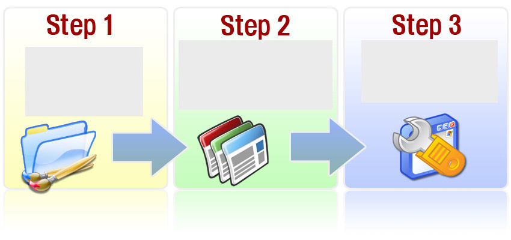
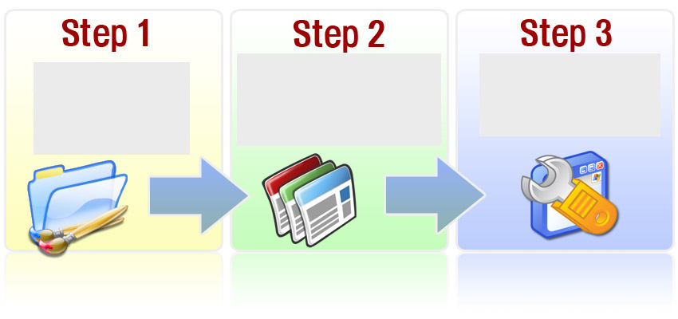

Who you gonna call?
Independent not-for-profit sites WTFisBrexit.com, Referendum.wtf and LeaveOrStay.co.uk have decided to work together to explain both sides of the EU Referendum debate.
Independent not-for-profit sites WTFisBrexit.com, Referendum.wtf and LeaveOrStay.co.uk have decided to work together to explain both sides of the EU Referendum debate.
